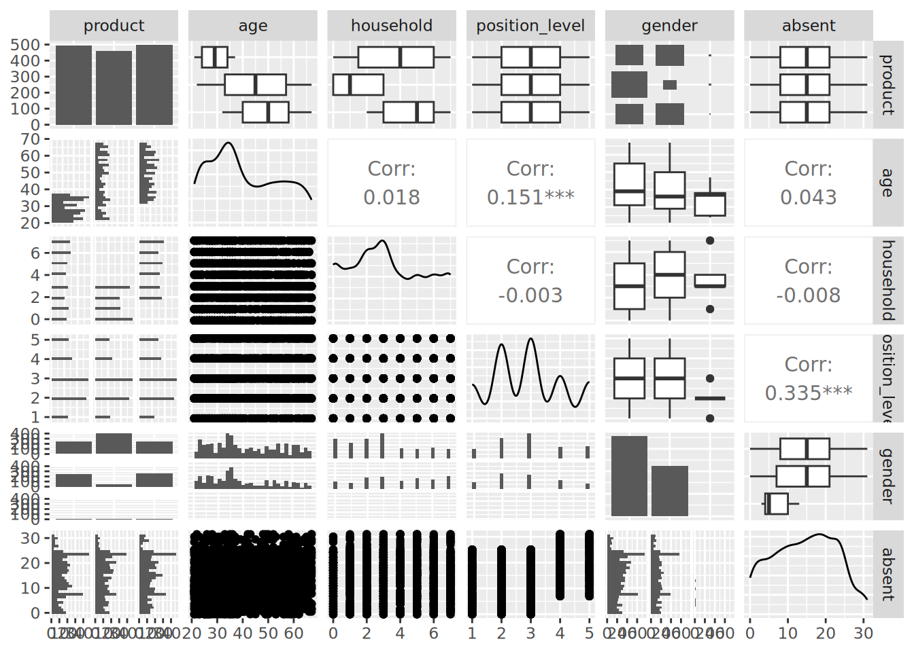

# if needed, download health_insurance data
url <- "http://peopleanalytics-regression-book.org/data/health_insurance.csv"
health_insurance <- read.csv(url)6 Multinomial Logistic Regression for Nominal Category Outcomes
In the previous chapter we looked at how to model a binary or dichotomous outcome using a logistic function. In this chapter we look at how to extend this to the case when the outcome has a number of categories that do not have any order to them. When an outcome has this nominal categorical form, it does not have a sense of direction. There is no ‘better’ or ‘worse’, no ‘higher’ or ‘lower’, there is only ‘different’.
6.1 When to use it
6.1.1 Intuition for multinomial logistic regression
A binary or dichotomous outcome like we studied in the previous chapter is already in fact a nominal outcome with two categories, so in principle we already have the basic technology with which to study this problem. That said, the way we approach the problem can differ according to the types of inferences we wish to make.
If we only wish to make inferences about the choice of each specific category—what drives whether an observation is in Category A versus the others, or Category B versus the others—then we have the option of running separate binomial logistic regression models on a ‘one versus the rest’ basis. In this case we can refine our model differently for each category, eliminating variables that are not significant in determining membership of that category. This could potentially lead to models being defined differently for different target outcome categories. Notably, there will be no common comparison category between these models. This is sometimes called a stratified approach.
However, in many studies there is a need for a ‘reference’ category to better understand the relative odds of category membership. For example, in clinical settings the relative risk factors for different clinical outcomes can only be understood relative to a reference (usually that of the ‘most healthy’ or ‘most recovered’ patients)1. In organizational settings, one can imagine that the odds of different types of mid-tenure career path changes could only be well understood relative to a reference career path (probably the most common one). While this approach would still be founded on binomial models, the reference points of these models are different; we would need to make decisions on refining the model differently, and we interpret the coefficients in a different way.
In this chapter we will briefly look at the stratified approach (which is effectively a repetition of work done in the previous chapter) before focusing more intently on how we construct models and make inferences using a multinomial approach.
6.1.2 Use cases for multinomial logistic regression
Multinomial logistic regression is appropriate for any situation where a limited number of outcome categories (more than two) are being modeled and where those outcome categories have no order. An underlying assumption is the independence of irrelevant alternatives (IIA). Otherwise stated, this assumption means that there is no other alternative for the outcome that, if included, would disproportionately influence the membership of one of the other categories2. In cases where this assumption is violated, one could choose to take a stratified approach, or attempt hierarchical or nested multinomial model alternatives, which are beyond the scope of this book.
Examples of typical situations that might be modeled by multinomial logistic regression include:
- Modeling voting choice in elections with multiple candidates
- Modeling choice of career options by students
- Modeling choice of benefit options by employees
6.1.3 Walkthrough example
You are an analyst at a large technology company. The company recently introduced a new health insurance provider for its employees. At the beginning of the year the employees had to choose one of three different health plan products from this provider to best suit their needs. You have been asked to determine which factors influenced the choice in product.
The health_insurance data set consists of the following fields:
product: The choice of product of the individual—A, B or Cage: The age of the individual when they made the choicegender: The gender of the individual as stated when they made the choicehousehold: The number of people living with the individual in the same household at the time of the choiceposition_level: Position level in the company at the time they made the choice, where 1 is is the lowest and 5 is the highestabsent: The number of days the individual was absent from work in the year prior to the choice
First we load the data and take a look at it briefly.
# view first few rows
head(health_insurance) product age household position_level gender absent
1 C 57 2 2 Male 10
2 A 21 7 2 Male 7
3 C 66 7 2 Male 1
4 A 36 4 2 Female 6
5 A 23 0 2 Male 11
6 A 31 5 1 Male 14# view structure
str(health_insurance)'data.frame': 1453 obs. of 6 variables:
$ product : chr "C" "A" "C" "A" ...
$ age : int 57 21 66 36 23 31 37 37 55 66 ...
$ household : int 2 7 7 4 0 5 3 0 3 2 ...
$ position_level: int 2 2 2 2 2 1 3 3 3 4 ...
$ gender : chr "Male" "Male" "Male" "Female" ...
$ absent : int 10 7 1 6 11 14 12 25 3 18 ...It looks like two of these columns should be converted to factor—product and gender—so let’s do that and then run a pairplot for a quick overview of any patterns, which can be seen in Figure 6.1.
library(GGally)
# convert product and gender to factors
health_insurance$product <- as.factor(health_insurance$product)
health_insurance$gender <- as.factor(health_insurance$gender)
GGally::ggpairs(health_insurance)
health_insurance data set
The data appears somewhat chaotic here. However, there are a few things to note. Firstly, we notice that there is a relatively even spread in choice between the products. We also notice that age seems to be playing a role in product choice. There are also some mild-to-moderate correlations in the data—in particular between age and position_level, and between absent and position_level. However, this problem is clearly more complex than we can determine from a bivariate perspective.
6.2 Running stratified binomial models
One approach to this problem is to look at each product choice and treat it as an independent binomial logistic regression model, modeling that choice against an alternative of all other choices. Each such model may help us describe the dynamics of the choice of a specific product, but we have to be careful in making conclusions about the overall choice between the three products. Running stratified models would not be very efficient if we had a wider range of choices for our outcome, but since we only have three possible choices here, it is reasonable to take this route.
6.2.1 Modeling the choice of Product A versus other products
Let’s first create and refine a binomial model for the choice of Product A.
library(makedummies)
# create dummies for product choice outcome
dummy_product <- makedummies::makedummies(health_insurance,
col = "product",
basal_level = TRUE)
# combine to original set
health_insurance <- cbind(health_insurance, dummy_product)
# run a binomial model for the Product A dummy against
# all input variables (let glm() handle dummy input variables)
A_model <- glm(
formula = product_A ~ age + gender + household +
position_level + absent,
data = health_insurance,
family = "binomial"
)
# summary
summary(A_model)
Call:
glm(formula = product_A ~ age + gender + household + position_level +
absent, family = "binomial", data = health_insurance)
Coefficients:
Estimate Std. Error z value Pr(>|z|)
(Intercept) 5.873634 0.453041 12.965 < 2e-16 ***
age -0.239814 0.013945 -17.197 < 2e-16 ***
genderMale 0.845978 0.168237 5.028 4.94e-07 ***
genderNon-binary 0.222521 1.246591 0.179 0.858
household 0.240205 0.037358 6.430 1.28e-10 ***
position_level 0.321497 0.071770 4.480 7.48e-06 ***
absent -0.003751 0.010753 -0.349 0.727
---
Signif. codes: 0 '***' 0.001 '**' 0.01 '*' 0.05 '.' 0.1 ' ' 1
(Dispersion parameter for binomial family taken to be 1)
Null deviance: 1864.15 on 1452 degrees of freedom
Residual deviance: 940.92 on 1446 degrees of freedom
AIC: 954.92
Number of Fisher Scoring iterations: 6We see that all variables except absent seem to play a significant role in the choice of Product A. All else being equal, being older makes the choice of Product A less likely. Males are more likely to choose Product A, and larger households and higher position levels also make the choice of Product A more likely. Based on this, we can consider simplifying our model to remove absent. We can also calculate odds ratios and perform some model diagnostics if we wish, similar to how we approached the problem in the previous chapter.
These results need to be interpreted carefully. For example, the odds ratios for the Product A choice based on a simplified model are as follows:
# simpler model
A_simple <- glm(
formula = product_A ~ age + household + gender + position_level,
data = health_insurance,
family = "binomial"
)
# view odds ratio as a data frame
as.data.frame(exp(A_simple$coefficients)) exp(A_simple$coefficients)
(Intercept) 343.4406669
age 0.7868098
household 1.2711317
genderMale 2.3282637
genderNon-binary 1.2794288
position_level 1.3692971As an example, and as a reminder from our previous chapter, we interpret the odds ratio for age as follows: all else being equal, every additional year of age is associated with an approximately 21% decrease in the odds of choosing Product A over the other products.
6.2.2 Modeling other choices
In a similar way we can produce two other models, representing the choice of Products B and C. These models produce similar significant variables, except that position_level does not appear to be significant in the choice of Product C. If we simplify all our three models we will have a slightly differently defined model for the choice of Product C versus our models for the other two product choices. However, we can conclude in general that the only input variable that seems to be non-significant across all choices of product is absent.
6.3 Running a multinomial regression model
An alternative to running separate binary stratified models is to run a multinomial logistic regression model. A multinomial logistic model will base itself from a defined reference category, and run a generalized linear model on the log-odds of membership of each of the other categories versus the reference category. Due to its extensive use in epidemiology and medicine, this is often known as the relative risk of one category compared to the reference category. Mathematically speaking, if \(X\) is the vector of input variables, and \(y\) takes the value \(A\), \(B\) or \(C\), with \(A\) as the reference, a multinomial logistic regression model will calculate:
\[ \mathrm{ln}\left(\frac{P(y = B)}{P(y=A)}\right) = \alpha{X} \] and
\[ \mathrm{ln}\left(\frac{P(y = C)}{P(y=A)}\right) = \beta{X} \] for different vectors of coefficients \(\alpha\) and \(\beta\).
6.3.1 Defining a reference level and running the model
The nnet package in R contains a multinom() function for running a multinomial logistic regression model using neural network technology3. Before we can run the model we need to make sure our reference level is defined.
# define reference by ensuring it is the first level of the factor
health_insurance$product <- relevel(health_insurance$product, ref = "A")
# check that A is now our reference
levels(health_insurance$product)[1] "A" "B" "C"Once the reference outcome is defined, the multinom() function from the nnet package will run a series of binomial models comparing the reference to each of the other categories.
First we will calculate our multinomial logistic regression model.
library(nnet)
multi_model <- multinom(
formula = product ~ age + gender + household +
position_level + absent,
data = health_insurance
)Now we will look at a summary of the results.
summary(multi_model)Call:
multinom(formula = product ~ age + gender + household + position_level +
absent, data = health_insurance)
Coefficients:
(Intercept) age genderMale genderNon-binary household position_level
B -4.60100 0.2436645 -2.38259765 0.2523409 -0.9677237 -0.4153040
C -10.22617 0.2698141 0.09670752 -1.2715643 0.2043568 -0.2135843
absent
B 0.011676034
C 0.003263631
Std. Errors:
(Intercept) age genderMale genderNon-binary household position_level
B 0.5105532 0.01543139 0.2324262 1.226141 0.06943089 0.08916739
C 0.6197408 0.01567034 0.1954353 2.036273 0.04960655 0.08226087
absent
B 0.01298141
C 0.01241814
Residual Deviance: 1489.365
AIC: 1517.365 Notice that the output of summary(multi_model) is much less detailed than for our standard binomial models, and it effectively just delivers the coefficients and standard errors of the two models against the reference. To determine whether specific input variables are significant we will need to calculate the p-values of the coefficients manually by calculating the z-statistics and converting (we covered this hypothesis testing methodology in Section 3.3.1).
# calculate z-statistics of coefficients
z_stats <- summary(multi_model)$coefficients/
summary(multi_model)$standard.errors
# convert to p-values
p_values <- (1 - pnorm(abs(z_stats)))*2
# display p-values in transposed data frame
data.frame(t(p_values)) B C
(Intercept) 0.000000e+00 0.000000e+00
age 0.000000e+00 0.000000e+00
genderMale 0.000000e+00 6.207192e-01
genderNon-binary 8.369465e-01 5.323278e-01
household 0.000000e+00 3.796088e-05
position_level 3.199529e-06 9.419906e-03
absent 3.684170e-01 7.926958e-016.3.2 Interpreting the model
This confirms that all variables except absent play a role in the choice between all products relative to a reference of Product A. We can also calculate odds ratios as before.
# display odds ratios in transposed data frame
odds_ratios <- exp(summary(multi_model)$coefficients)
data.frame(t(odds_ratios)) B C
(Intercept) 0.01004179 3.621021e-05
age 1.27591615 1.309721e+00
genderMale 0.09231048 1.101538e+00
genderNon-binary 1.28703467 2.803927e-01
household 0.37994694 1.226736e+00
position_level 0.66013957 8.076841e-01
absent 1.01174446 1.003269e+00Here are some examples of how these odds ratios can be interpreted in the multinomial context (used in combination with the p-values above):
- All else being equal, every additional year of age increases the relative odds of selecting Product B versus Product A by approximately 28%, and increases the relative odds of selecting Product C versus Product A by approximately 31%
- All else being equal, being Male reduces the relative odds of selecting Product B relative to Product A by 91%.
- All else being equal, each additional household member deceases the odds of selecting Product B relative to Product A by 62%, and increases the odds of selecting Product C relative to Product A by 23%.
6.3.3 Changing the reference
It may be the case that someone would like to hear the odds ratios stated against the reference of an individual choosing Product B. For example, what are the odds ratios of Product C relative to a reference of Product B? One way to do this would be to change the reference and run the model again. Another option is to note that:
\[ \frac{P(y = C)}{P(y=B)} = \frac{\frac{P(y = C)}{P(y = A)}}{\frac{P(y=B)}{P(y = A)}} = \frac{e^{\beta{X}}}{e^{\alpha{X}}} = e^{(\beta - \alpha)X} \] Therefore
\[ \mathrm{ln}\left(\frac{P(y = C)}{P(y=B)}\right) = (\beta - \alpha)X \] This means we can obtain the coefficients of C against the reference of B by simply calculating the difference between the coefficients of C and B against the common reference of A. Let’s do this.
# calculate difference between coefficients and view as column
coefs_c_to_b <- summary(multi_model)$coefficients[2, ] -
summary(multi_model)$coefficients[1, ]
data.frame(coefs_c_to_b) coefs_c_to_b
(Intercept) -5.625169520
age 0.026149597
genderMale 2.479305168
genderNon-binary -1.523905192
household 1.172080452
position_level 0.201719688
absent -0.008412403If the number of categories in the outcome variable is limited, this can be an efficient way to obtain the model coefficients against various reference points without having to rerun models. However, to determine standard errors and p-values for these coefficients the model will need to be recalculated against the new reference.
6.4 Model simplification, fit and goodness-of-fit for multinomial logistic regression models
Simplifying a multinomial regression model needs to be done with care. In a binomial model, there is one set of coefficients and their p-values can be a strong guide to which variables can be removed safely. However, in multinomial models there are several sets of coefficients to consider.
6.4.1 Gradual safe elimination of variables
In Hosmer, Lemeshow, and Sturdivant (2013), a gradual process of elimination of variables is recommended to ensure that significant variables that confound each other in the different logistic models are not accidentally dropped from the final model. The recommended approach is as follows:
- Start with the variable with the least significant p-values in all sets of coefficients—in our case
absentwould be the obvious first candidate. - Run the multinomial model without this variable.
- Test that none of the previous coefficients change by more than 20–25%.
- If there was no such change, safely remove the variable and proceed to the next non-significant variable.
- If there is such a change, retain the variable and proceed to the next non-significant variable.
- Stop when all non-significant variables have been tested.
In our case, we can compare the coefficients of the model with and without absent included and verify that the changes in the coefficients are not substantial.
# remove absent
simpler_multi_model <- multinom(
formula = product ~ age + gender + household + position_level,
data = health_insurance,
model = TRUE
)# view coefficients with absent
data.frame(t(summary(multi_model)$coefficients)) B C
(Intercept) -4.60099991 -10.226169428
age 0.24366447 0.269814063
genderMale -2.38259765 0.096707521
genderNon-binary 0.25234087 -1.271564323
household -0.96772368 0.204356774
position_level -0.41530400 -0.213584308
absent 0.01167603 0.003263631# view coefficients without absent
data.frame(t(summary(simpler_multi_model)$coefficients)) B C
(Intercept) -4.5008999 -10.19269011
age 0.2433855 0.26976294
genderMale -2.3771342 0.09801281
genderNon-binary 0.1712091 -1.29636779
household -0.9641956 0.20510806
position_level -0.3912014 -0.20908835We can see that only genderNon-binary changed substantially, but we note that this is on an extremely small sample size and so will not have any effect on our model4. It therefore appears safe to remove absent. Furthermore, the Akaike Information Criterion is equally valid in multinomial models for evaluating model parsimony. Here we can calculate that the AIC of our model with and without absent is 1517.36 and 1514.25, respectively, confirming that the model without absent is marginally more parsimonious.
6.4.2 Model fit and goodness-of-fit
As with the binomial case, a variety of Pseudo-\(R^2\) methods are available to assess the fit of a multinomial logistic regression model, although some of our previous variants (particularly Tjur) are not defined on models with more than two outcome categories.
DescTools::PseudoR2(simpler_multi_model,
which = c("McFadden", "CoxSnell", "Nagelkerke")) McFadden CoxSnell Nagelkerke
0.5329175 0.6896945 0.7760413 Due to the fact that multinomial models have more than one set of coefficients, assessing goodness-of-fit is more challenging, and is still an area of intense research. The most approachable method to assess model confidence is the Hosmer-Lemeshow test mentioned in the previous chapter, which was extended in Fagerland, Hosmer, and Bofin (2008) for multinomial models. An implementation is available in the generalhoslem package in R. However, this version of the Hosmer-Lemeshow test is problematic for models with a small number of input variables (fewer than ten), and therefore we will not experiment with it here. For further exploration of this topic, Chapter 8 of Hosmer, Lemeshow, and Sturdivant (2013) is recommended, and for a more thorough treatment of the entire topic of categorical analytics, Agresti (2007) is an excellent companion.
6.5 Multinomial logistic regression using Python
In Python, multinomial logistic regression is similarly available using the statsmodels formula API. As usual, care must be taken to ensure that the reference category is appropriately defined, dummy input variables need to be explicitly constructed, and a constant term must be added to ensure an intercept is calculated.
import pandas as pd
import statsmodels.api as sm
# load health insurance data
url = "http://peopleanalytics-regression-book.org/data/health_insurance.csv"
health_insurance = pd.read_csv(url)
# convert product to categorical as an outcome variable
y = pd.Categorical(health_insurance['product'])
# create dummies for gender
X1 = pd.get_dummies(health_insurance['gender'], drop_first = True)
# replace back into input variables
X2 = health_insurance.drop(['product', 'gender'], axis = 1)
X = pd.concat([X1, X2], axis = 1)
# add a constant term to ensure intercept is calculated
Xc = sm.add_constant(X)
# define model
model = sm.MNLogit(y, Xc.astype(float))
# fit model
insurance_model = model.fit()# see results summary
print(insurance_model.summary()) MNLogit Regression Results
==============================================================================
Dep. Variable: y No. Observations: 1453
Model: MNLogit Df Residuals: 1439
Method: MLE Df Model: 12
Date: Thu, 11 Dec 2025 Pseudo R-squ.: 0.5332
Time: 12:47:10 Log-Likelihood: -744.68
converged: True LL-Null: -1595.3
Covariance Type: nonrobust LLR p-value: 0.000
==================================================================================
y=B coef std err z P>|z| [0.025 0.975]
----------------------------------------------------------------------------------
const -4.6010 0.511 -9.012 0.000 -5.602 -3.600
Male -2.3826 0.232 -10.251 0.000 -2.838 -1.927
Non-binary 0.2528 1.226 0.206 0.837 -2.151 2.656
age 0.2437 0.015 15.790 0.000 0.213 0.274
household -0.9677 0.069 -13.938 0.000 -1.104 -0.832
position_level -0.4153 0.089 -4.658 0.000 -0.590 -0.241
absent 0.0117 0.013 0.900 0.368 -0.014 0.037
----------------------------------------------------------------------------------
y=C coef std err z P>|z| [0.025 0.975]
----------------------------------------------------------------------------------
const -10.2261 0.620 -16.501 0.000 -11.441 -9.011
Male 0.0967 0.195 0.495 0.621 -0.286 0.480
Non-binary -1.2698 2.036 -0.624 0.533 -5.261 2.721
age 0.2698 0.016 17.218 0.000 0.239 0.301
household 0.2043 0.050 4.119 0.000 0.107 0.302
position_level -0.2136 0.082 -2.597 0.009 -0.375 -0.052
absent 0.0033 0.012 0.263 0.793 -0.021 0.028
==================================================================================6.6 Learning exercises
6.6.1 Discussion questions
- Describe the difference between a stratified versus a multinomial approach to modeling an outcome with more than two nominal categories.
- Describe how you would interpret the odds ratio of an input variable for a given category in a stratified modeling approach.
- Describe what is meant by the ‘reference’ of a multinomial logistic regression model with at least three nominal outcome categories.
- Describe how you would interpret the odds ratio of an input variable for a given category in a multinomial modeling approach.
- Given a multinomial logistic regression model with outcome categories A, B, C and D and reference category A, describe two ways to determine the coefficients of a multinomial logistic regression model with reference category C.
- Describe a process for safely simplifying a multinomial logistic regression model by removing input variables.
6.6.2 Data exercises
Use the same health_insurance data set from this chapter to answer these questions.
- Complete the full stratified approach to modeling the three product choices that was started in Section 6.2. Calculate the coefficients, odds ratios and p-values in each case.
- Carefully write down your interpretation of the odds ratios from the previous question.
- Run a multinomial logistic regression model on the
productoutcome using Product B as reference. Calculate the coefficients, ratios and p-values in each case. - Verify that the coefficients for Product C against reference Product B matches those calculated in Section 6.3.3.
- Carefully write down your interpretation of the odds ratios calculated in the previous question.
- Use the process described in Section 6.4.1 to simplify the multinomial model in Question 3.
In Hosmer, Lemeshow, and Sturdivant (2013), a good example is provided where the outcome is the placement of psychiatric patients in various forms of aftercare, with Outpatient Care as the reference.↩︎
Put differently, it assumes that adding or removing any other available alternative would affect the odds of the other alternatives in equal proportion. It has been shown that there have been many studies that proceeded with a multinomial approach despite the violation of this assumption.↩︎
Neural networks are computational structures which consist of a network of nodes, each of which take an input and perform a mathematical function to return an output onward in the network. Most commonly they are used in deep learning, but a simple neural network here can model these different categories using a logistic function.↩︎
Removing insignificant dummy variables, or combining them to make simpler dummy variables can also be done. In the case of these observations of
genderNon-binary, given the relatively small number of these observations in the data set, it does not harm the model to leave this variable included, safe in the knowledge that it has a minuscule effect↩︎